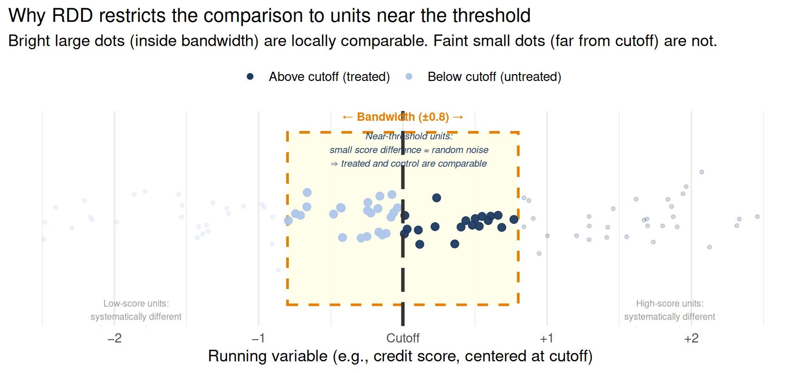
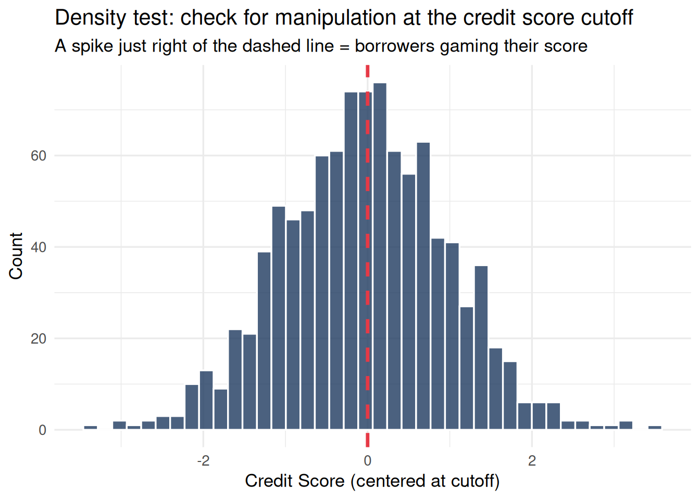
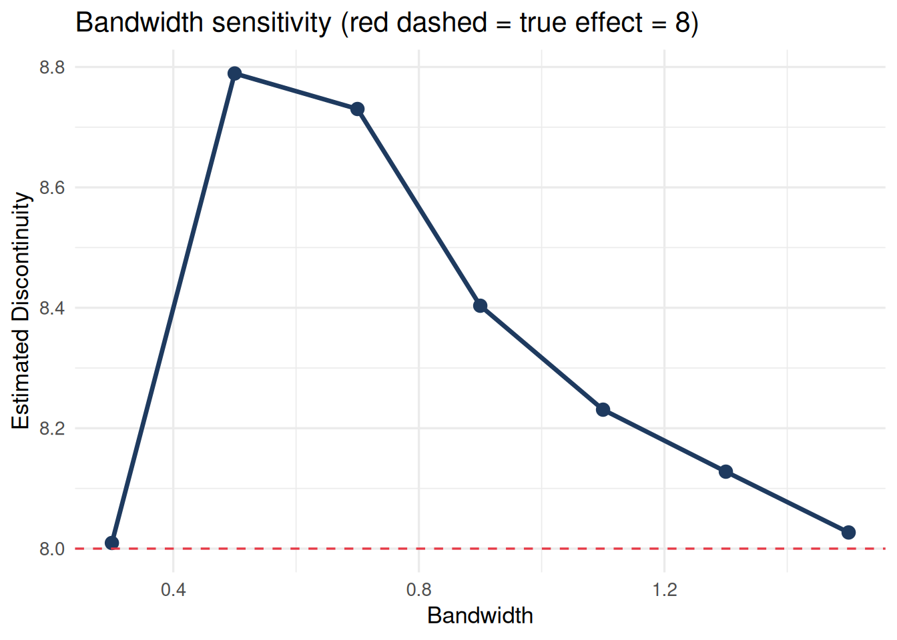
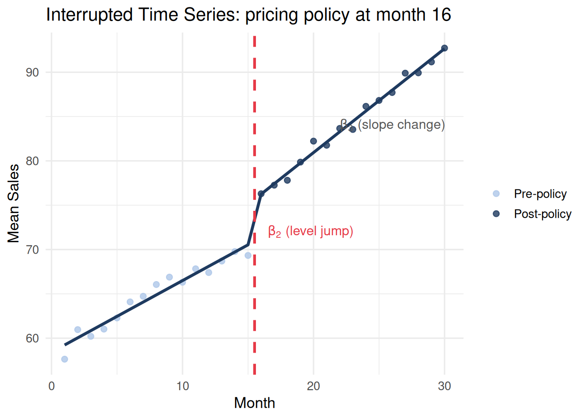
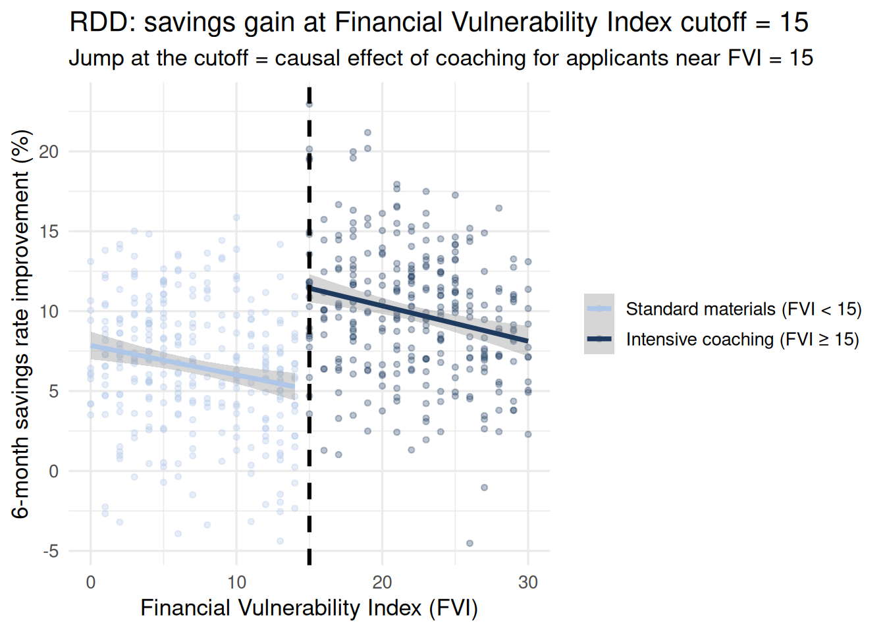
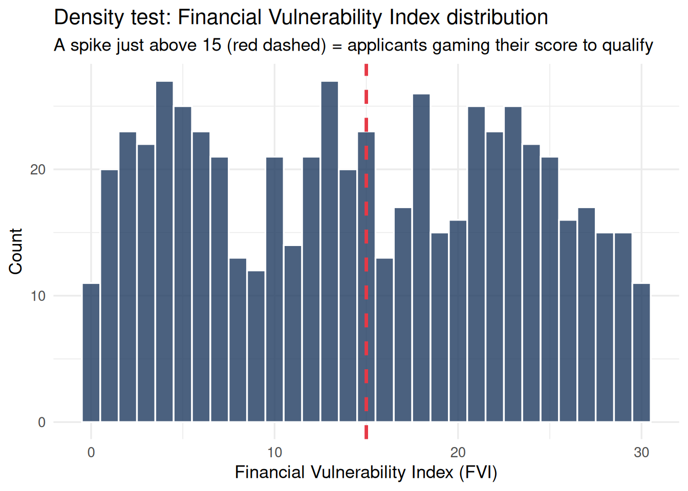

Regression Discontinuity Design
Regression Discontinuity Design
The Threshold as a Quasi-Experiment
Regression Discontinuity Design (RDD) exploits a rule: treatment is assigned when a continuous running variable crosses a known threshold. Observations just below and just above the threshold are nearly identical in every respect except treatment status — because small differences in the running variable near the cutoff are essentially random noise in the data-generating process.
The key insight: Right at the threshold, treatment is as-good-as-randomly assigned. The jump in outcomes at the cutoff is the causal effect of treatment for units near the threshold.
RDD appears in two distinct forms across the research contexts this course covers. In longitudinal research, the running variable is often time itself (Interrupted Time Series) or a cumulative score that triggers a policy intervention. In experimental research, the running variable is often a continuous eligibility screening score, and the cutoff determines who qualifies for a treatment arm.
Why Local Comparison Is Valid: The Bandwidth Argument
The central claim of RDD is that units near the cutoff are comparable in a way that units far from the cutoff are not. A borrower with a credit score of 648 and a borrower with a credit score of 652 are separated by what amounts to random noise in the data-generating process — a single missed payment, a dispute that cleared, a month’s credit utilization that ticked slightly in one direction. Their underlying creditworthiness is essentially identical. But a borrower with a score of 600 and a borrower with a score of 700 differ systematically in creditworthiness, payment history, income stability, and many other factors that independently predict financial outcomes.
This means comparing all borrowers above the cutoff to all borrowers below the cutoff conflates the treatment effect with all the real differences between high- and low-credit-score individuals. The RDD narrows the comparison to a bandwidth around the cutoff where assignment is effectively local and the confounders are approximately balanced.
The bandwidth is not arbitrary — rdrobust selects it optimally to balance the bias-variance trade-off: a wider bandwidth increases sample size (lower variance) but includes more units far from the cutoff where the “approximately random” claim is weaker (higher bias). The density test and falsification tests below check whether the local-randomization assumption holds.
Part A: RDD in Longitudinal Research
The Density Test
Code
ggplot(df_rdd, aes(x = credit_score)) +
geom_histogram(bins = 40, fill = "#1e3a5f", color = "white", alpha = 0.8) +
geom_vline(xintercept = 0, color = "#e63946", linewidth = 1.2,
linetype = "dashed") +
labs(title = "Density test: check for manipulation at the credit score cutoff",
subtitle = "A spike just right of the dashed line = borrowers gaming their score",
x = "Credit Score (centered at cutoff)", y = "Count") +
theme_minimal(base_size = 13)
The distribution is smooth through the cutoff — no evidence of strategic score manipulation. In real credit data, a spike just above the threshold would indicate that borrowers near the margin are paying down specific accounts, disputing errors, or taking other targeted actions to cross it.
Falsification Tests
Run the RDD on pre-treatment covariates (account tenure, age). These cannot be caused by getting prime-rate access. A jump at the threshold in a covariate means something else is discontinuous there — a serious threat to validity.
Code
df_rdd <- df_rdd |> mutate(acct_tenure = 5 + rnorm(n, 0, 2))
fake <- rdrobust(y = df_rdd$acct_tenure, x = df_rdd$credit_score, c = 0)
cat("Jump in account tenure at cutoff (should be ~0):", round(fake$coef[1], 3),
"| p =", round(fake$pv[1], 3), "\n")Jump in account tenure at cutoff (should be ~0): -0.164 | p = 0.656 Bandwidth Sensitivity
The estimate should be stable as you vary the bandwidth around the default. Dramatic changes signal dependence on functional form assumptions near the threshold.
Code
bws <- seq(0.3, 1.5, by = 0.2)
ests <- sapply(bws, \(bw)
rdrobust(y = df_rdd$fin_health, x = df_rdd$credit_score, c = 0, h = bw)$coef[1])
tibble(Bandwidth = bws, Estimate = ests) |>
ggplot(aes(x = Bandwidth, y = Estimate)) +
geom_line(color = "#1e3a5f", linewidth = 1.2) +
geom_point(size = 3, color = "#1e3a5f") +
geom_hline(yintercept = 8, linetype = "dashed", color = "#e63946") +
labs(title = "Bandwidth sensitivity (red dashed = true effect = 8)",
x = "Bandwidth", y = "Estimated Discontinuity") +
theme_minimal(base_size = 13)
Interrupted Time Series as Temporal RDD
A special form of RDD uses time as the running variable. When a policy takes effect at a known date, observations before that date serve as “control” and observations after as “treated.” The continuity assumption becomes: absent the policy, the pre-existing time trend would have continued smoothly through the policy date.
This design is called an Interrupted Time Series (ITS) and is especially valuable in longitudinal panel data where a policy is applied to all units simultaneously.
The ITS model separates three distinct quantities:
\[Y_t = \underbrace{\beta_0 + \beta_1 t}_{\text{pre-policy trend}} + \underbrace{\beta_2 D_t}_{\text{level jump at policy date}} + \underbrace{\beta_3 (t - c) D_t}_{\text{post-policy slope change}} + \varepsilon_t\]
- \(\beta_1\): the pre-policy trend (the counterfactual slope — what would have continued)
- \(\beta_2\): the immediate level jump at the policy date (the “intercept shift”)
- \(\beta_3\): the change in slope after the policy (whether the policy altered the trajectory)
Code
n_stores <- 30
n_months <- 30
store_eff <- rnorm(n_stores, 0, 6) # store-level random intercepts
df_its <- expand_grid(store = 1:n_stores, month = 1:n_months) |>
mutate(
post = as.integer(month >= 16), # policy starts at month 16
t_post = pmax(month - 15, 0), # time since policy, 0 pre-policy
store_u = store_eff[store],
# True: level jump = +5, slope change = +0.3/month
sales = 60 + 0.8 * month + 5 * post + 0.3 * t_post + store_u +
rnorm(n(), 0, 5),
store = factor(store)
)
m_its <- lmer(sales ~ month + post + t_post + (1 | store), data = df_its,
REML = FALSE)
summary(m_its)$coefficients |>
as.data.frame() |>
rownames_to_column("term") |>
filter(term %in% c("month", "post", "t_post")) |>
rename(estimate = Estimate, std.error = `Std. Error`, t = `t value`) |>
mutate(across(where(is.numeric), \(x) round(x, 3))) |>
knitr::kable(caption = "ITS model: pre-trend, level jump (post), and slope change (t_post)")| term | estimate | std.error | t |
|---|---|---|---|
| month | 0.807 | 0.055 | 14.638 |
| post | 4.546 | 0.676 | 6.725 |
| t_post | 0.365 | 0.078 | 4.685 |
Code
# Aggregate to store-average for plotting
df_its_agg <- df_its |>
group_by(month, post) |>
summarise(sales = mean(sales), .groups = "drop")
# Predicted line from model (using population-level prediction, no store RE)
coefs <- fixef(m_its)
df_pred <- tibble(month = 1:30) |>
mutate(
post = as.integer(month >= 16),
t_post = pmax(month - 15, 0),
pred = coefs["(Intercept)"] + coefs["month"] * month +
coefs["post"] * post + coefs["t_post"] * t_post
)
ggplot() +
geom_point(data = df_its_agg, aes(x = month, y = sales, color = factor(post)),
size = 2, alpha = 0.8) +
geom_line(data = df_pred, aes(x = month, y = pred), linewidth = 1.2,
color = "#1e3a5f") +
geom_vline(xintercept = 15.5, linetype = "dashed", color = "#e63946",
linewidth = 1.1) +
annotate("text", x = 16.5, y = 72, label = expression(beta[2] ~ "(level jump)"),
hjust = 0, color = "#e63946", size = 4) +
annotate("text", x = 22, y = 84, label = expression(beta[3] ~ "(slope change)"),
hjust = 0, color = "#555555", size = 4) +
scale_color_manual(values = c("#aec6e8", "#1e3a5f"),
labels = c("Pre-policy", "Post-policy")) +
labs(title = "Interrupted Time Series: pricing policy at month 16",
x = "Month", y = "Mean Sales", color = NULL) +
theme_minimal(base_size = 13)
Interpretation:
- \(\hat{\beta}_2 \approx 5\): The policy caused an immediate, step-change increase in sales at implementation.
- \(\hat{\beta}_3 \approx 0.3\): The policy also increased the monthly sales growth rate by 0.3 units per month compared to the pre-policy trend.
- \(\hat{\beta}_1 \approx 0.8\): The counterfactual — in the absence of the policy, sales would have continued rising by 0.8 units per month.
The ITS design cannot rule out other events that happened exactly at month 16. The strongest threats are contemporaneous shocks (another policy, a market event) that coincide precisely with the policy date.
The density-test equivalent for ITS: Check for unusual clustering of observations just before the policy implementation date. Firms that anticipate a pricing policy may accelerate purchases or delay inventory, creating a temporary spike in the outcome in periods 14–15. Plot the distribution of the outcome in the 3–4 periods immediately before implementation and compare to the pre-trend expectation.
Part B: RDD in Experimental Research
RDD logic appears in applied studies when eligibility for an intervention is determined by crossing a continuous screening threshold. Unlike the observational RDD — where the cutoff is an exogenous administrative rule — this version uses the cutoff to create a natural comparison group within a structured study.
Eligibility Threshold: Financial Distress Screening and Coaching Access
A financial services organization screens applicants for an intensive debt-counseling program using a Financial Vulnerability Index (FVI) — a composite of debt-to-income ratio, payment history, and account balances scored 0–30 (higher = more financially distressed). Applicants scoring ≥ 15 are offered access to the intensive coaching program; those scoring below 15 receive standard informational materials.
This creates an RDD: applicants just above and just below FVI = 15 are nearly identical in their actual financial situation — the cutoff is an administrative rule, not a true behavioral discontinuity. The outcome is savings rate improvement over six months.
The FVI RDD is sharp if the cutoff is strictly enforced. It becomes fuzzy if advisors exercise discretion — some below-threshold clients are enrolled based on advisor judgment, some above-threshold clients decline. In the fuzzy case, the cutoff becomes an instrument for actual program participation, and the estimand is a LATE.
Code
n <- 600
fvi <- round(runif(n, 0, 30)) # FVI scores from 0 to 30
enrolled <- as.integer(fvi >= 15) # sharp: ≥15 enrolled in intensive coaching
# True causal effect for applicants near the threshold = 6 pp savings improvement
# Underlying trend: more distressed applicants have lower baseline savings gains
savings_gain <- 8 - 0.2 * fvi + 6 * enrolled + rnorm(n, 0, 4)
df_coaching <- tibble(fvi, enrolled, savings_gain)
rdd_coaching <- rdrobust(y = df_coaching$savings_gain, x = df_coaching$fvi, c = 15)
summary(rdd_coaching)Call: rdrobust
Sharp RD estimates using local polynomial regression.
Number of Obs. 600
BW type mserd
Kernel Triangular
VCE method NN
Left Right
Number of Obs. 300 300
Eff. Number of Obs. 68 79
Order est. (p) 1 1
Order bias (q) 2 2
BW est. (h) 3.506 3.506
BW bias (b) 5.763 5.763
rho (h/b) 0.608 0.608
Unique Obs. 15 16
=====================================================================
Point Robust Inference
Estimate z P>|z| [ 95% C.I. ]
---------------------------------------------------------------------
RD Effect 6.734 2.895 0.004 [1.982 , 10.293]
=====================================================================Code
ggplot(df_coaching, aes(x = fvi, y = savings_gain, color = factor(enrolled))) +
geom_point(alpha = 0.3, size = 1.2) +
geom_smooth(method = "lm", formula = y ~ x, se = TRUE, linewidth = 1.3) +
geom_vline(xintercept = 15, linetype = "dashed", color = "black",
linewidth = 1.1) +
scale_color_manual(values = c("#aec6e8", "#1e3a5f"),
labels = c("Standard materials (FVI < 15)",
"Intensive coaching (FVI ≥ 15)")) +
labs(title = "RDD: savings gain at Financial Vulnerability Index cutoff = 15",
subtitle = "Jump at the cutoff = causal effect of coaching for applicants near FVI = 15",
x = "Financial Vulnerability Index (FVI)", y = "6-month savings rate improvement (%)",
color = NULL) +
theme_minimal(base_size = 13)
Density Test: Did Applicants Game Their FVI Score?
If applicants believe that scoring ≥ 15 gives them access to a desirable coaching program, they might strategically misreport their financial situation (understating income, overstating debts) to cross the threshold. A spike in the density just above 15 indicates this gaming behavior.
Code
ggplot(df_coaching, aes(x = fvi)) +
geom_histogram(bins = 31, fill = "#1e3a5f", color = "white", alpha = 0.8) +
geom_vline(xintercept = 15, color = "#e63946", linewidth = 1.2,
linetype = "dashed") +
labs(title = "Density test: Financial Vulnerability Index distribution",
subtitle = "A spike just above 15 (red dashed) = applicants gaming their score to qualify",
x = "Financial Vulnerability Index (FVI)", y = "Count") +
theme_minimal(base_size = 13)
In this simulation there is no spike — the distribution is smooth through the cutoff, consistent with the continuity assumption.
Falsification Test: No Jump in Pre-Screening Covariates
Run the RDD on account tenure — a pre-screening covariate that cannot be caused by coaching enrollment. A discontinuity at FVI = 15 in account tenure would indicate that something other than financial distress drives the threshold assignment.
Code
df_coaching <- df_coaching |>
mutate(acct_tenure = 5 + rnorm(n, 0, 3))
fake_coaching <- rdrobust(y = df_coaching$acct_tenure, x = df_coaching$fvi, c = 15)
cat("Jump in account tenure at FVI = 15 (should be ~0):",
round(fake_coaching$coef[1], 3),
"| p =", round(fake_coaching$pv[1], 3), "\n")Jump in account tenure at FVI = 15 (should be ~0): -0.869 | p = 0.505 The LATE Interpretation for the Coaching RDD
Like all RDD estimates, this is a Local Average Treatment Effect for applicants near FVI = 15 — those at the margin of financial distress. The treatment effect for severely distressed applicants (FVI = 25+) may be very different: they face structural financial constraints that intensive coaching may not overcome, or alternatively, they may benefit most. But RDD cannot speak to them — they are far from the threshold.
The practical implication: The RDD estimate tells you whether coaching helps marginally distressed applicants — exactly the population where the program’s benefit is most uncertain and contested. It cannot tell you whether to expand the program to the most severely distressed, who would need a different identification strategy (e.g., randomized waitlist).
Summary: RDD Across Contexts
| Feature | Observational RDD | Interrupted Time Series | Screening-Threshold RDD |
|---|---|---|---|
| Running variable | Continuous score (credit, income, age) | Time (months, quarters) | Continuous distress/eligibility screener |
| Threshold | Administrative cutoff (e.g., credit score 650) | Policy implementation date | Program eligibility cutoff (e.g., FVI ≥ 15) |
| Treatment | Product / advisory access | Pre vs. post policy | Intensive coaching enrollment |
| Density test | Spike in score just above cutoff = gaming | Unusual clustering before policy date | Spike in screener score just above cutoff |
| Continuity assumption | No sorting; no other policy at same cutoff | No confounding events at policy date | No strategic misreporting of screener |
| LATE for… | Borrowers near the credit score threshold | All units at the policy date | Applicants near the FVI = 15 cutoff |
RDD is most credible when the threshold is truly arbitrary from the unit’s perspective, when the running variable cannot be precisely manipulated, and when the bandwidth is narrow enough that treated and control units are genuinely comparable. The narrower the bandwidth, the more credible the local randomization — but also the smaller the sample and the larger the standard errors.